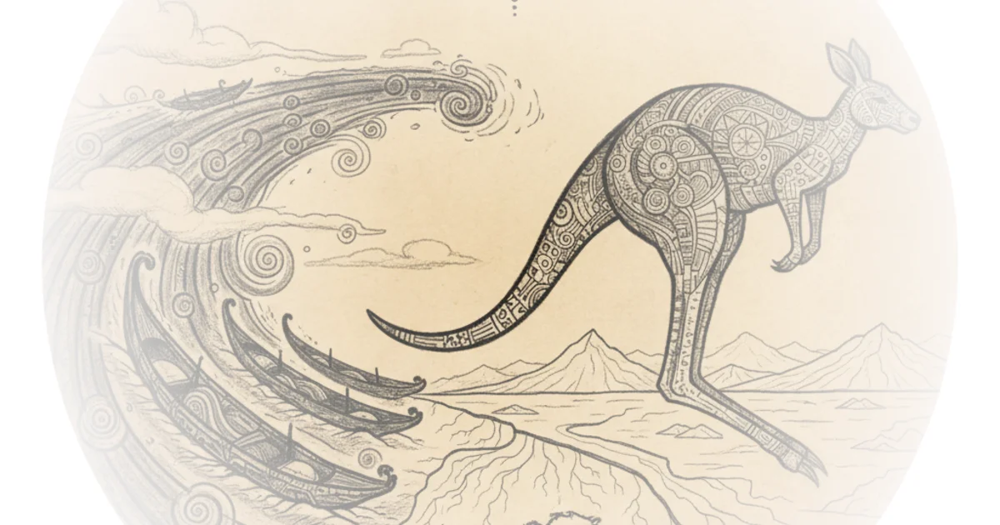

The first great voyage of exploration wasn't across the Atlantic — it was into the unknown waters of the Pacific. Around 50,000 years ago, humans set sail for what would become Australia, and in doing so, they accomplished something no species before them had ever done: they crossed an ocean to start a completely new life on a new continent.
This is one of the most extraordinary stories in human history, and it comes with evidence that will make you rethink everything you thought you knew about when and how humans spread across the planet. Stefan Milo brings together archaeological digs, ancient DNA, and the terrifying creatures that once roamed this ancient land.

The Voyage to Sahul
Australia has been cut off from every other continent for roughly 30 million years — separated from Antarctica long ago by tectonic forces that created the vast ocean between them. This isolation explains why Australia's wildlife is so radically different from the rest of the world. Marsupials like kangaroos dominate one side, while tigers and other placental mammals rule the other.
The line separating these two animal kingdoms is what scientists call the Wallace Line — a boundary so profound it's sometimes called the "kangaroo-tiger divide." But 50,000 years ago, this division didn't exist. New Guinea, Australia, and dozens of smaller islands were connected in one land mass that scientists call Sahul.
The journey was almost certainly intentional. The ocean currents around these islands are brutally strong — constantly sweeping would-be voyagers back toward Antarctica. Reaching these shores wasn't accidental. It required deliberate navigation, and it demanded a population large enough to start over: at least 100 people, likely more. This wasn't a few individuals washed ashore. This was colonization.
Evidence from the Beach
On the island of Timor, archaeologists excavated a rock shelter called Ly Cave — an site offering perfect conditions for preserving traces of prehistoric life. In its deep sediments, they found something remarkable: evidence that humans arrived around 44,000 years ago.
Before those sediment layers, there's no human activity at all. But after them, everything changes. The stone tools are there. The tiny remains of ancient berries are there. And most tellingly, the fish bones — not just river fish, but marine animals like grouper and travali. These were people comfortable with the sea.
The conclusion is unavoidable: these islands weren't reached by accident. The currents were too fierce, the distances too great. Humans had to be capable seafarers. They had to bring enough people to start a new life. This arrival in Australia represents what may be the first clear time humans set sail for the horizon to begin an entirely new existence.
It's kind of the same impulse that sent us to the moon — that wonderlust, that refusal to stop roaming.
The Dating Debate
Exactly when humans arrived in Sahul is subject to fierce debate. Three kinds of evidence tell part of this story.
The oldest human remains in Australia come from Lake in New South Wales. Here, three individuals were found — one definite burial, one cremation. The cremation dates to 26,000 years ago, but the burial dates to 40,000 years ago. The man was roughly 50 years old, suffered arthritis, and was buried on the lake shore, covered in red ochre. It's a fitting farewell.
But the physical tools are more complicated. Many sites across Australia date between 40,000 and 48,000 years old. The oldest reported site is called Madjedbaya in the north — where archaeologists found 104 grinding stones. Analysis shows they were used mainly for processing plants, but also ochre — a material of enormous importance to ancient people for art.
The dating caused controversy because the oldest layer came back as between 68.7 and 50.4 thousand years ago. The top end approaching 65,000 years is what sparked debate.
What DNA Tells Us
Here's where genetics throws a wrench into this story.
All humans outside of Africa carry Neanderthal DNA — input from interbreeding that happened around 50,000 years ago, if not more recently. Aboriginal Australians and Papuans share the exact same input from precisely the same period. They descend from the same migration out of Africa.
So here's the problem: if all ancestors were making this journey around 50,000 years ago, how could modern humans be in Australia 65,000 years ago? One possibility is an earlier migration that left either no genetic legacy or a very small one — then replaced by the bigger migration at 50,000 years. But evidence for that is thin.
Some archaeologists argue the older dates are simply mistakes — perhaps brought up by termites or other natural processes. It's possible. What's certain is that genetics consistently points to around 50,000 years ago as when humans spread across Australia.
How They Spread
One study used mitochondrial DNA from 111 modern Aboriginal people and uncovered something remarkable: a split early on, with groups moving west along the coast while others moved east. These ancient Australians circumnavigated the enormous continent in just a few thousand years — impossibly fast.
The migration was driven by something in these Paleolithic people. Whether it's cultural impulse or simply the absence of other humans in an open landscape, we don't know. But the DNA shows that some Aboriginal groups have been on their land for tens of thousands of years — remarkably consistent across time.
Australia's Ancient Monsters
Paleolithic Australia had no other humans. But it had creatures that were absolutely not messing around.
Australian animals today are some of the deadliest in the world: giant saltwater crocodiles, blue-ringed octopus, inland taipans, Sydney funnel-web spiders. The list is absurd. But prehistoric Australia was worse.
Meet Megalania — a relative of the monitor lizard, but three to five times larger than a person. Estimates suggest around five meters long and 500 kilograms. These were huge beasts, found in northern Australia where humans would have first made landfall. Imagine hopping off your canoe and one of these monsters marching toward you.
The marsupials were just as terrifying — the largest carnivorous marsupial ever. They were apex predators, approaching lion size at roughly 130 kilograms. And then there's Genjornis — a bird standing over two meters tall, with surviving cousins like emus that were absolutely rapid. The grasslands must have thundered with the sound of their feet.
When you're given the name "demon ducks," you know you've earned it.
There was even Depropus — a hippo-sized wombat-like creature that migrated across hundreds of kilometers. It may be the originator for the mythical creature Bunyip, said to live in Australian swamps and eat people.
Counterpoints
Critics might note the dating controversy isn't settled. The genetic evidence consistently points to 50,000 years ago, while some archaeological sites push back toward 65,000 years. One side must be wrong — or both could be right if there were multiple waves of migration. We simply don't know yet.
Bottom Line
This story is remarkable because it proves something most people never consider: humans are explorers by nature. They crossed an ocean 50,000 years ago with the same curiosity that later sent us to the moon. The evidence — tools, fish bones, DNA — all points to deliberate colonization, not accident. What we have yet to discover about this first great voyage may dwarf what we already know.